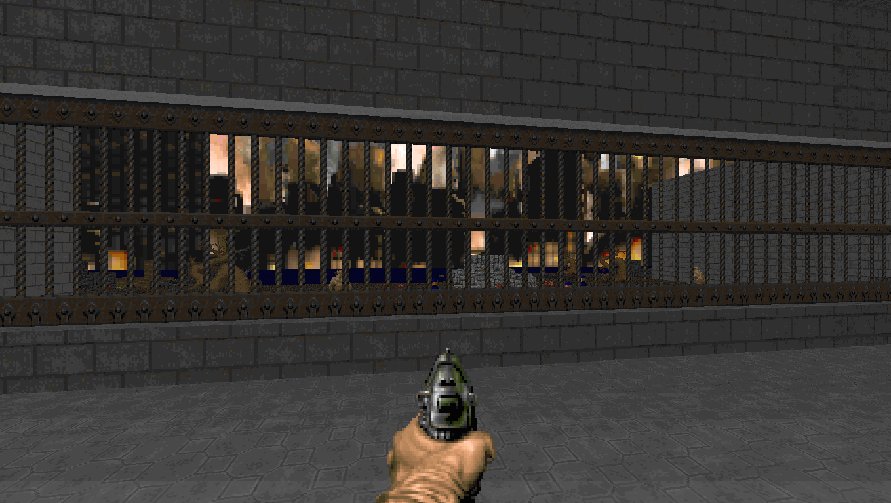
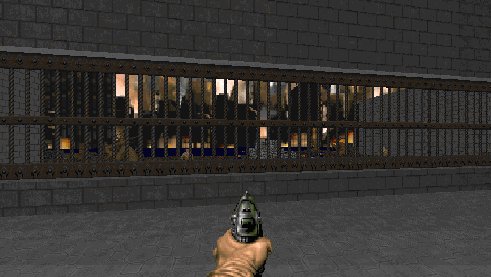

Boom é um source port de Doom criado em 1998 com Jim Flynn, Stan Gula, Ty Halderman, Lee Killough e Rand Phares como desenvolvedores. Boom tem como foco ser fiel as mecanicas e apresentação do Doom original, e remover limites da engine original enquanto implementa adições que não saem da visão original do jogo.
Enquanto o Boom original não é atualizado a quase três decadas, diversos desenvolvedores usam seu código fonte como base para seus ports ainda mantendo a visão original em mente.
Atualmente a comunidade define um mapa compativel com Boom é um mapa que roda em PRBoom+, DSDA-Doom, entre outros.
 
